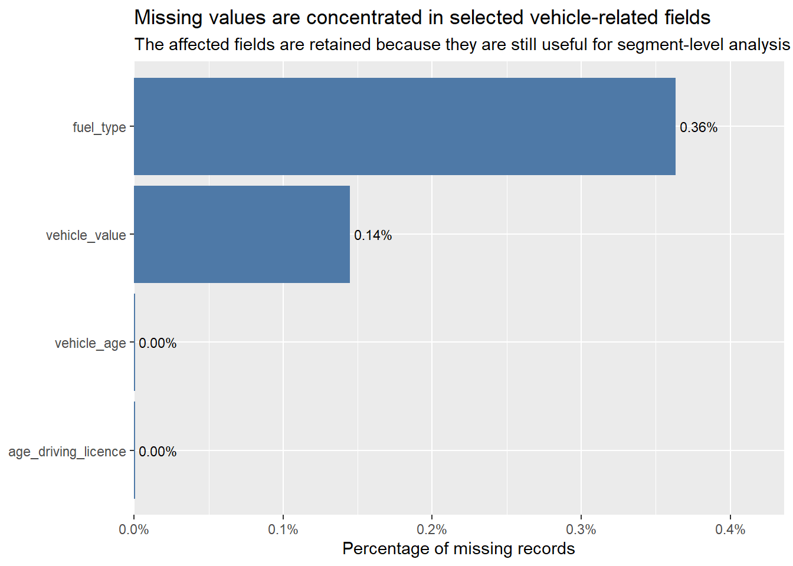
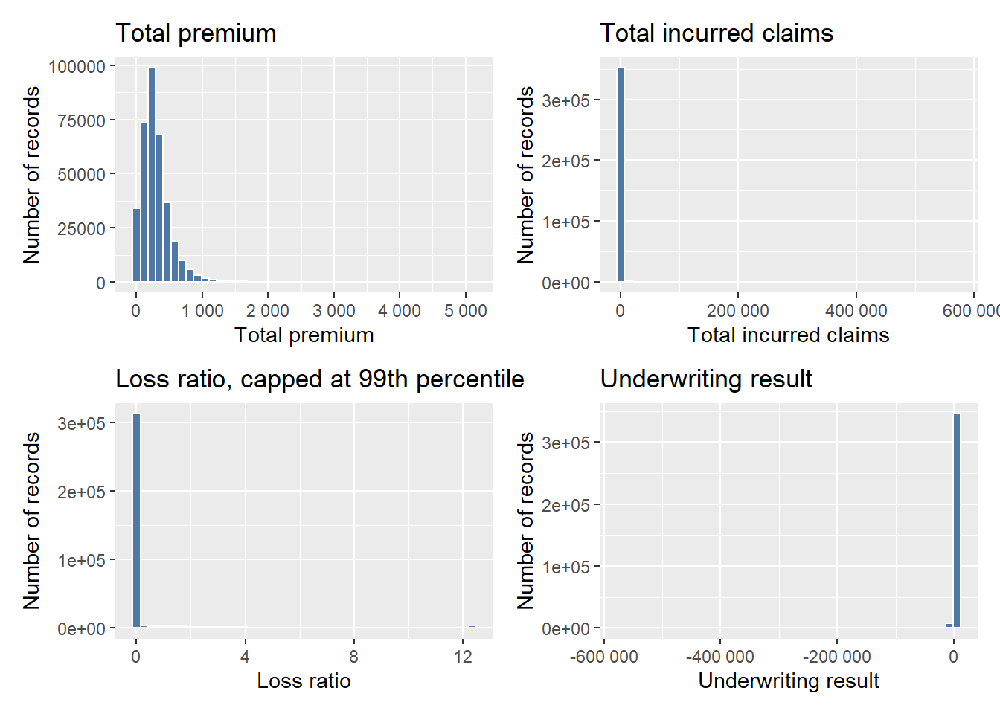
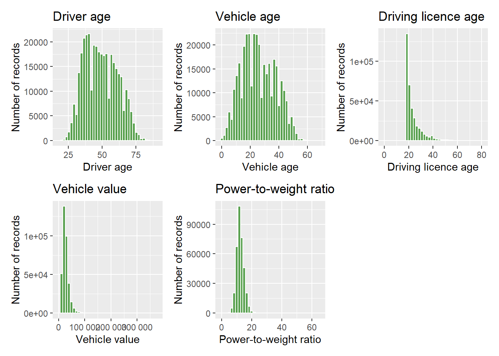
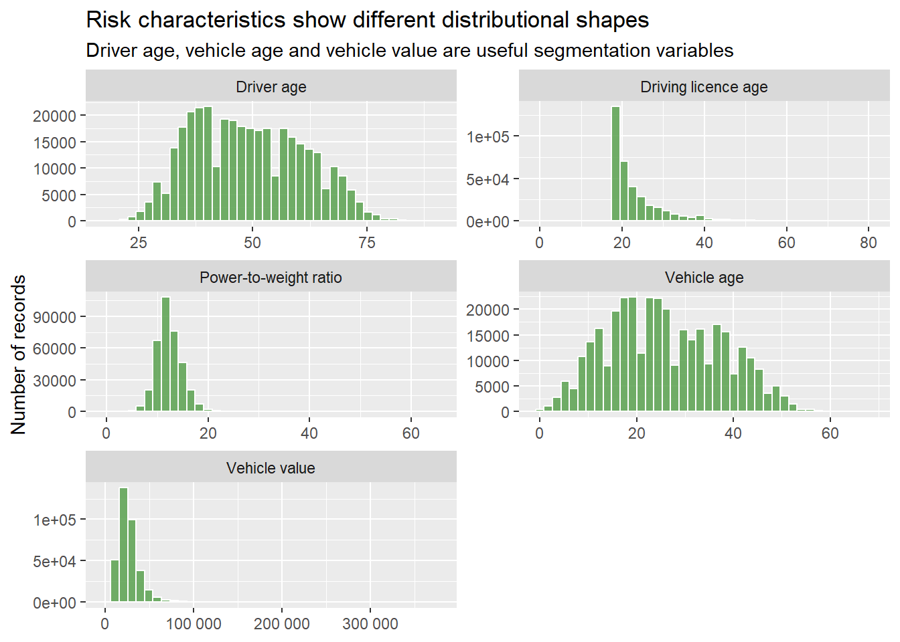

pacman::p_load(tidyverse, scales, patchwork,
ggdist, ggridges, knitr)Take-home Exercise 1
1. Overview/Background
Motor insurance portfolios usually contain many policies with no claims and a small number of policies with severe claim outcomes. Because of this, aggregate profitability can look acceptable even when selected segments are loss-making or highly volatile. This study uses visual analytics to examine the distribution of key variables and to identify portfolio factors that may influence profitability and volatility.
2. The tasks
- Apply suitable univariate visual analytics techniques to explore the distributions and characteristics of numerical and categorical variables.
- Apply suitable bivariate visual analytics techniques to investigate and statistically validate factors influencing the profitability and volatility of the insurance portfolio.
For this report, profitability is measured mainly using underwriting_result, underwriting_margin and loss_ratio. Volatility is examined using claim occurrence, claim frequency, the spread of loss ratio and upper-tail loss ratio behaviour.
Note
The analysis is exploratory. The statistical tests validate whether observed differences are unlikely to be random, but they do not prove direct causality. Business interpretation is still required because the dataset is observational.
3. Getting started
3.1 Installing and loading the packages
For this exercise, the following R packages will be used:
- tidyverse for data wrangling and ggplot2 visualisation,
- scales for formatting values,
- patchwork for combining plots,
- ggdist for raincloud-style distribution plots,
- ggridges for ridgeline plots, and
- knitr for report formatting support.
The following code chunk uses p_load() of pacman package to check if tidyverse packages are installed in the computer. If they are, the libraries will be called into R.
4. The Data
4.1 Data import
The data file used is Dataset of motor insurance portfolio.csv. The file is semicolon-delimited, so read_delim() is used instead of read_csv().
motor_raw <- read_delim(
"data/Dataset of motor insurance portfolio.csv",
delim = ";",
show_col_types = FALSE
)
# glimpse(motor_raw)4.2 Data overview
| metric | value |
|---|---|
| Number of records | 354,140 |
| Number of variables | 47 |
| Unique insured IDs | 185,678 |
| Years covered | 2022, 2023, 2024 |
| Total premium | $105,079,669 |
| Total incurred claims | $73,864,811 |
| Total claims | 77,099 |
| Total exposure | 250,325.9 |
The dataset has 354,140 records and 47 variables. It covers policy transaction records from 2022, 2023, 2024, which allows both cross-sectional and time-based portfolio analysis.
4.3 Data Cleaning
| variable | missing_records | missing_pct |
|---|---|---|
| fuel_type | 1,287 | 0.36% |
| vehicle_value | 513 | 0.14% |
| vehicle_age | 2 | 0.00% |
| age_driving_licence | 2 | 0.00% |

The missing value check shows that only four variables have a small portion of missing values: fuel_type, vehicle_value, vehicle_age and age_driving_licence.
For this exercise, missing values will not be removed because the main profitability and volatility measures, such as premium, claims, incurred amount and exposure, are still available. Removing rows with minor missing values may unnecessarily distort the portfolio-level analysis.
Duplicate records are checked to ensure that there are no repeated rows. If exact duplicates are found, they should be removed because they may represent repeated transaction records. However, repeated insured_id values alone should not be treated as duplicates, as the same customer may have multiple policy records across years or policy types.
Code
duplicate_records <- sum(duplicated(motor_raw))
duplicate_pct <- duplicate_records / nrow(motor_raw)
duplicate_tbl <- data.frame(
Check = "Exact duplicate rows across all variables",
Duplicate_Records = comma(duplicate_records),
Duplicate_Percentage = percent(duplicate_pct, accuracy = 0.01)
)
knitr::kable(
duplicate_tbl,
caption = "Duplicate records check"
)| Check | Duplicate_Records | Duplicate_Percentage |
|---|---|---|
| Exact duplicate rows across all variables | 0 | 0.00% |
4.4 Data Preparation
4.4.1 Deriving analytical variables
The raw dataset includes premium, incurred claims, number of claims and exposure. To investigate profitability and volatility, derived fields are created:
underwriting_result= total premium minus total incurred claims,loss_ratio= total incurred claims divided by total premium,claim_flag= whether the record has at least one claim, andloss_ratio_capped= loss ratio capped at the 99th percentile for visualisation readability.
These derived fields are sufficient for the study objectives. underwriting_result and loss_ratio are used to assess profitability, while claim_flag and loss_ratio_capped help examine claim occurrence and volatility. Other variables are retained in their original form to keep the analysis simple and interpretable.
motor_prep <- mutate(
motor_raw,
year = as.factor(year),
policy_type = as.factor(policy_type),
policy_status = as.factor(policy_status),
business_type = as.factor(business_type),
payment_frequency = as.factor(payment_frequency),
underwriting_result = total_premium - total_incurred,
loss_ratio = if_else(total_premium > 0, total_incurred / total_premium, NA_real_),
claim_flag = total_claims > 0
)
motor_prep <- filter(
motor_prep,
total_premium > 0,
total_exposure > 0
)
loss_ratio_cap_value <- quantile(motor_prep$loss_ratio, 0.99, na.rm = TRUE)
motor <- mutate(
motor_prep,
loss_ratio_capped = pmin(loss_ratio, loss_ratio_cap_value)
)
Note
loss_ratio_capped is used only for visualisation and non-parametric tests. Portfolio profitability calculations still use the original premium and incurred claim values.
4.4.2 Portfolio-level summary
Code
portfolio_summary <- summarise(
motor,
valid_records = n(),
unique_insured = n_distinct(insured_id),
total_premium = sum(total_premium, na.rm = TRUE),
total_incurred = sum(total_incurred, na.rm = TRUE),
underwriting_result = sum(underwriting_result, na.rm = TRUE),
loss_ratio = sum(total_incurred, na.rm = TRUE) / sum(total_premium, na.rm = TRUE),
total_claims = sum(total_claims, na.rm = TRUE),
claim_record_rate = mean(claim_flag, na.rm = TRUE),
p99_loss_ratio = quantile(loss_ratio, 0.99, na.rm = TRUE)
)
portfolio_display <- data.frame(
Metric = c(
"Valid records",
"Unique insured customers",
"Total premium",
"Total incurred claims",
"Underwriting result",
"Portfolio loss ratio",
"Total claims",
"Claim record rate",
"99th percentile loss ratio"
),
Value = c(
comma(portfolio_summary$valid_records),
comma(portfolio_summary$unique_insured),
dollar(portfolio_summary$total_premium, prefix = "$"),
dollar(portfolio_summary$total_incurred, prefix = "$"),
dollar(portfolio_summary$underwriting_result, prefix = "$"),
percent(portfolio_summary$loss_ratio, accuracy = 0.1),
comma(portfolio_summary$total_claims),
percent(portfolio_summary$claim_record_rate, accuracy = 0.1),
percent(portfolio_summary$p99_loss_ratio, accuracy = 0.1)
)
)
knitr::kable(
portfolio_display,
caption = "Portfolio-level performance summary"
)| Metric | Value |
|---|---|
| Valid records | 354,091 |
| Unique insured customers | 185,677 |
| Total premium | $105,079,669 |
| Total incurred claims | $73,864,631 |
| Underwriting result | $31,215,039 |
| Portfolio loss ratio | 70.3% |
| Total claims | 77,098 |
| Claim record rate | 14.3% |
| 99th percentile loss ratio | 70.3% |
The portfolio contains 354,091 transaction records after filtering for positive premium and exposure. These records belong to 185,677 unique customers, showing that some customers appear more than once for transactions or renewals.
The portfolio looks profitable. It collected about $105.1 million in premiums and incurred about $73.9 million in claims, giving a positive underwriting result of about $31.2 million. The portfolio loss ratio is 70.3%, which is below 100%, so claims did not exceed premiums. Only 14.3% of records had claims, which means most records did not make a claim. However, there were still 77,098 claims in total. This suggests that the volatility comes from policies with more expensive claims.
Overall, the portfolio is profitable overall, but further analysis is needed to find which variables are less profitable or more volatile.
5. Objective 1: Univariate Visual Analytics
This section applies suitable univariate visual analytics techniques to explore the distributions and characteristics of numerical and categorical variables.
5.1 Distribution of Key Financial Variables
Histograms are suitable for identifying skewness, zero inflation and long-tail behaviour in numerical variables.
Code
p1 <- ggplot(motor, aes(x = total_premium)) +
geom_histogram(bins = 45, fill = "#4E79A7", colour = "white") +
scale_x_continuous(labels = label_number()) +
labs(
title = "Total premium",
x = "Total premium",
y = "Number of records"
)
p2 <- ggplot(motor, aes(x = total_incurred)) +
geom_histogram(bins = 45, fill = "#4E79A7", colour = "white") +
scale_x_continuous(labels = label_number()) +
labs(
title = "Total incurred claims",
x = "Total incurred claims",
y = "Number of records"
)
p3 <- ggplot(motor, aes(x = loss_ratio_capped)) +
geom_histogram(bins = 45, fill = "#4E79A7", colour = "white") +
scale_x_continuous(labels = label_number()) +
labs(
title = "Loss ratio, capped at 99th percentile",
x = "Loss ratio",
y = "Number of records"
)
p4 <- ggplot(motor, aes(x = underwriting_result)) +
geom_histogram(bins = 45, fill = "#4E79A7", colour = "white") +
scale_x_continuous(labels = label_number()) +
labs(
title = "Underwriting result",
x = "Underwriting result",
y = "Number of records"
)
p1 + p2 + p3 + p4
The distributions show that the financial variables are highly skewed. Most records have low premiums and little or no incurred claims, so the bars are heavily concentrated near zero. This means the portfolio is generally stable for most policies. However, the underwriting result shows a few large negative cases, suggesting that profitability can still be affected by a small number of high-claim records.
5.2 Distribution of Customer and Vehicle Characteristics
Code
p5 <- ggplot(motor, aes(x = driver_age)) +
geom_histogram(bins = 40, fill = "#59A14F", colour = "white") +
scale_x_continuous(labels = label_number()) +
labs(
title = "Driver age",
x = "Driver age",
y = "Number of records"
)
p6 <- ggplot(motor, aes(x = vehicle_age)) +
geom_histogram(bins = 40, fill = "#59A14F", colour = "white") +
scale_x_continuous(labels = label_number()) +
labs(
title = "Vehicle age",
x = "Vehicle age",
y = "Number of records"
)
p7 <- ggplot(motor, aes(x = age_driving_licence)) +
geom_histogram(bins = 40, fill = "#59A14F", colour = "white") +
scale_x_continuous(labels = label_number()) +
labs(
title = "Driving licence age",
x = "Driving licence age",
y = "Number of records"
)
p8 <- ggplot(motor, aes(x = vehicle_value)) +
geom_histogram(bins = 40, fill = "#59A14F", colour = "white") +
scale_x_continuous(labels = label_number()) +
labs(
title = "Vehicle value",
x = "Vehicle value",
y = "Number of records"
)
p9 <- ggplot(motor, aes(x = power_to_weight_ratio)) +
geom_histogram(bins = 40, fill = "#59A14F", colour = "white") +
scale_x_continuous(labels = label_number()) +
labs(
title = "Power-to-weight ratio",
x = "Power-to-weight ratio",
y = "Number of records"
)
p5 + p6 + p7 + p8 + p9
risk_long <- motor |>
transmute(
`Driver age` = driver_age,
`Vehicle age` = vehicle_age,
`Driving licence age` = age_driving_licence,
`Vehicle value` = vehicle_value,
`Power-to-weight ratio` = power_to_weight_ratio
) |>
pivot_longer(everything(), names_to = "variable", values_to = "value")
ggplot(risk_long, aes(x = value)) +
geom_histogram(bins = 40, fill = "#59A14F", colour = "white", alpha = 0.85) +
facet_wrap(~variable, scales = "free", ncol = 2) +
scale_x_continuous(labels = label_number()) +
labs(
title = "Risk characteristics show different distributional shapes",
subtitle = "Driver age, vehicle age and vehicle value are useful segmentation variables",
x = NULL,
y = "Number of records"
)